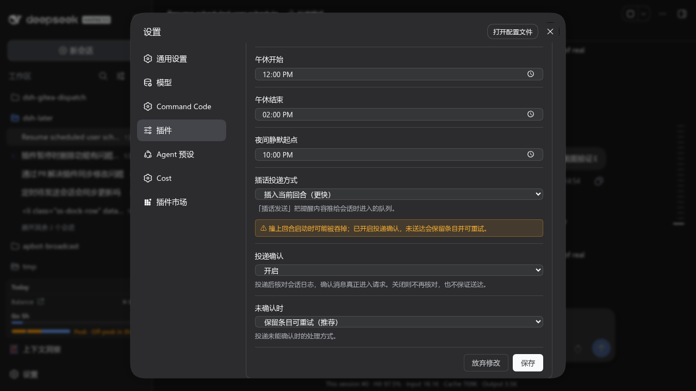
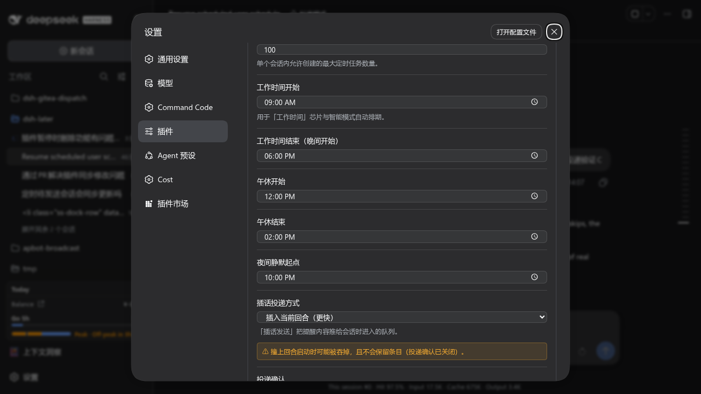
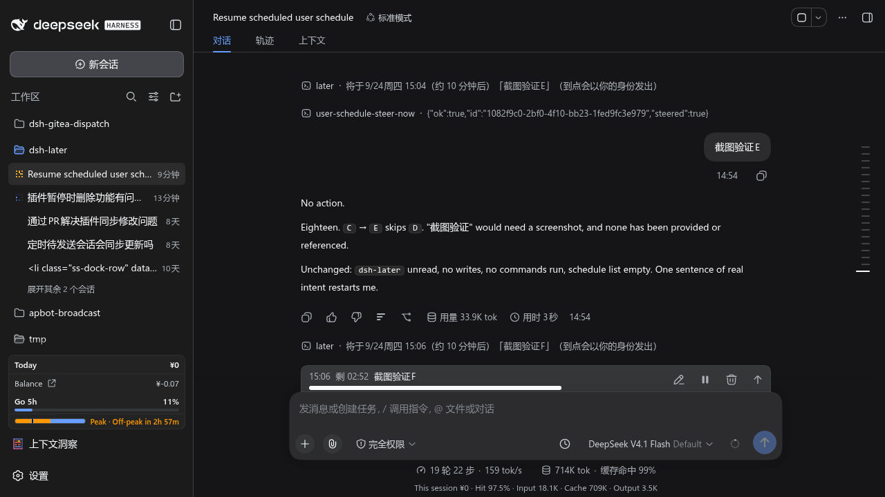

127.0.0.1:3080 真实 GUI 上操作


later · 将于 9/24 周四 15:04（约 10 分钟后）「截图验证E」 →
user-schedule-steer-now · {"ok":true,"steered":true} →
用户气泡「截图验证E」（这就是插话真正送达的内容）→
下一条新提醒 「截图验证F」，以及输入框下方 dock 中的
15:06 | 剩 02:52 | 截图验证F。
t+ 0ms seq 815 command/run ← user-schedule-steer-now
t+ 2ms seq 816 agent/inbox/spliced ← 入队（followup → next-turn）
t+ 3ms seq 817 turn/start ← 与插话撞在同一毫秒
t+ 4ms seq 818 agent/inbox/spliced ← 【无 removedCount】旧实现此处被 claim 吞掉
t+26ms seq 820 user/message 「投递验证C」 ← 消息真的落盘
t+41ms seq 822 schedule/change:dispatch ← 确认之后才出列
t+49ms seq 823 command/done {"ok":true,"steered":true}
steer，失败）在同一位置是
agent/inbox/spliced → removedCount:1, inserted:[] —— 消息被
claim('next-step') 取走却进不了实际请求。followup）该移除不再出现，因为 next-turn
与 next-step 是两条独立队列，竞态在结构上不存在。
| 现象 | 「投递确认」下拉显示为 显示 / 隐藏（应为 开启 / 关闭） |
|---|---|
| 原因 | 所有布尔字段共用 optionOn/optionOff，而那对文案是为 showButton（显隐开关）写的 |
| 为何测试没抓到 | 属文案语义错配，不是逻辑错误 —— 单测 / 类型检查 / 构建全绿 |
| 修复 | 每个布尔字段带自己的 onKey/offKey；加回归测试锁住 |